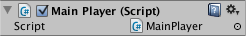

Creating and Using Scripts
The behavior of GameObjects is controlled by the Components that are attached to them. Although Unity's built-in Components can be very versatile, you will soon find you need to go beyond what they can provide to implement your own gameplay features. Unity allows you to create your own Components using scripts. These allow you to trigger game events, modify Component properties over time and respond to user input in any way you like.
Unity supports the C# programming language natively. C# (pronounced C-sharp) is an industry-standard language similar to Java or C++.
In addition to this, many other .NET languages can be used with Unity if they can compile a compatible DLL - see here for further details.
Learning the art of programming and the use of these particular languages is beyond the scope of this introduction. However, there are many books, tutorials and other resources for learning how to program with Unity. See the Learning section of our website for further details.
Creating Scripts
Unlike most other assets, scripts are usually created within Unity directly. You can create a new script from the Create menu at the top left of the Project panel or by selecting Assets > Create > C# Script from the main menu.
The new script will be created in whichever folder you have selected in the Project panel. The new script file's name will be selected, prompting you to enter a new name.

It is a good idea to enter the name of the new script at this point rather than editing it later. The name that you enter will be used to create the initial text inside the file, as described below.
Anatomy of a Script file
When you double-click a script Asset in Unity, it will be opened in a text editor. By default, Unity will use Visual Studio, but you can select any editor you like from the External Tools panel in Unity's preferences (go to Unity > Preferences).
The initial contents of the file will look something like this:
using UnityEngine;
using System.Collections;
public class MainPlayer : MonoBehaviour {
// Use this for initialization
void Start () {
}
// Update is called once per frame
void Update () {
}
}
A script makes its connection with the internal workings of Unity by implementing a class which derives from the built-in class called MonoBehaviour. You can think of a class as a kind of blueprint for creating a new Component type that can be attached to GameObjects. Each time you attach a script component to a GameObject, it creates a new instance of the object defined by the blueprint. The name of the class is taken from the name you supplied when the file was created. The class name and file name must be the same to enable the script component to be attached to a GameObject.
The main things to note, however, are the two functions defined inside the class. The Update function is the place to put code that will handle the frame update for the GameObject. This might include movement, triggering actions and responding to user input, basically anything that needs to be handled over time during gameplay. To enable the Update function to do its work, it is often useful to be able to set up variables, read preferences and make connections with other GameObjects before any game action takes place. The Start function will be called by Unity before gameplay begins (ie, before the Update function is called for the first time) and is an ideal place to do any initialization.
Note to experienced programmers: you may be surprised that initialization of an object is not done using a constructor function. This is because the construction of objects is handled by the editor and does not take place at the start of gameplay as you might expect. If you attempt to define a constructor for a script component, it will interfere with the normal operation of Unity and can cause major problems with the project.
Controlling a GameObject
As noted above, a script only defines a blueprint for a Component and so none of its code will be activated until an instance of the script is attached to a GameObject. You can attach a script by dragging the script asset to a GameObject in the hierarchy panel or to the inspector of the GameObject that is currently selected. There is also a Scripts submenu on the Component menu which will contain all the scripts available in the project, including those you have created yourself. The script instance looks much like any other Component in the Inspector:

Once attached, the script will start working when you press Play and run the game. You can check this by adding the following code in the Start function:-
// Use this for initialization
void Start ()
{
Debug.Log("I am alive!");
}
Debug.Log is a simple command that just prints a message to Unity's console output. If you press Play now, you should see the message at the bottom of the main Unity editor window and in the Console window (menu: Window > General > Console).